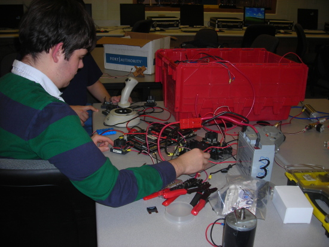

|
FIRST Scholarship Opportunities
$12.2 million
740+ individual opportunities
130+ providers
Here you can find information about scholarships offered through FIRST, including an overview, why these opportunitites are offered, and additional details.
Overview
The mission of FIRST is to inspire students through an appreciation for science and technology. Colleges, universities, corporations, and associations wish to continue this aim beyond high school - in keeping with the spirit of FIRST, they offer over $9 million in scholarships to FIRST participants. These scholarships range from a one-time award of $500 to renewable amounts to full tuition for four years! Although some scholarships are university-specific for certain majors like engineering, mathematics, science, computer science, and technology, others can be used for any course of study at any institution. With so many opportunities, there is bound to be a scholarship for every FIRST student.
|
Why FIRST Students are Valued
Actively participating on a FIRST team requires communication, time management, teamwork, and technical skills. Colleges and universities recognize this and wish to attract such students who are passionate about science and technology to their institution. They value FIRST students for their amazing potential to impact the future, and they are certain that these students will be well-equipped for upper-level education.
|

|

|
Opportunity Details
Specific information on offerings and deadlines can be viewed here.
Don't miss out on this fantastic opportunity for juniors and seniors, as submission deadline dates may be approaching, and new scholarships/updates are constantly added.
|
|